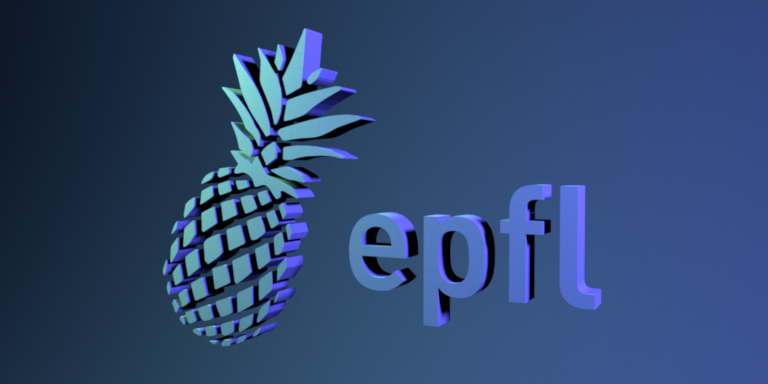
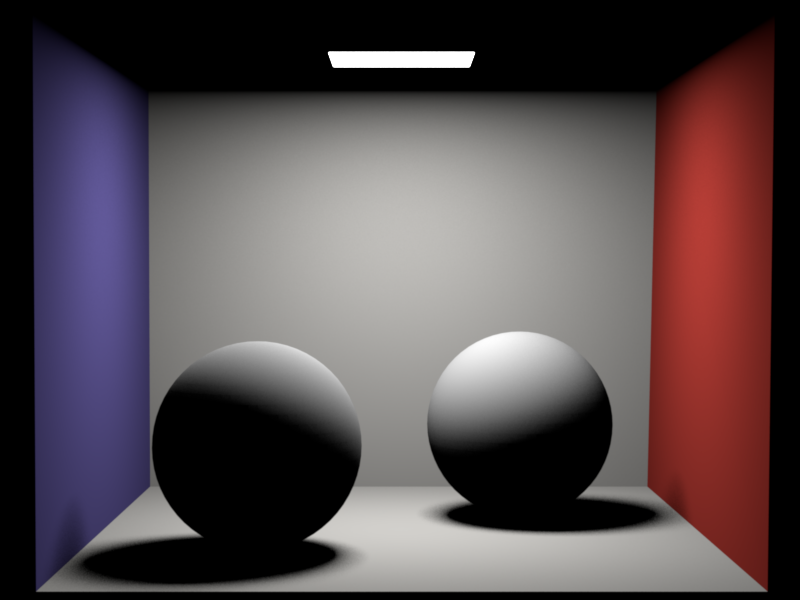
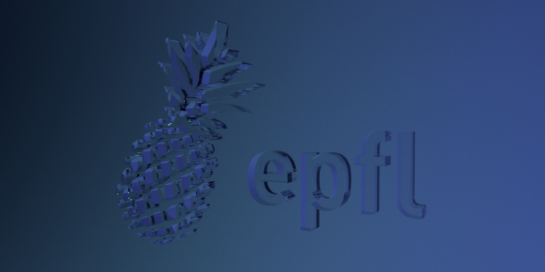
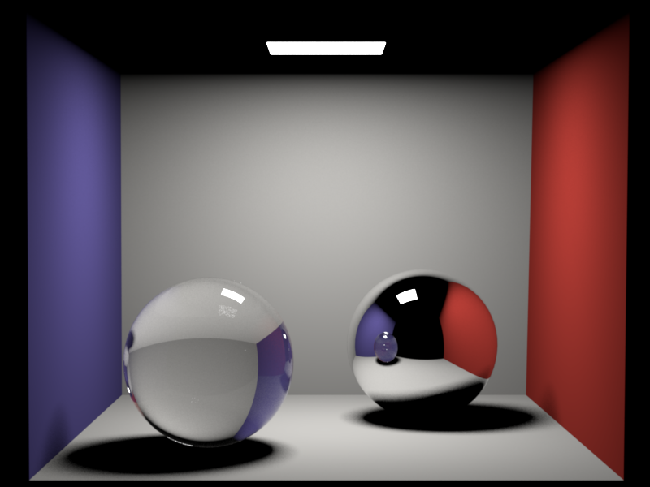
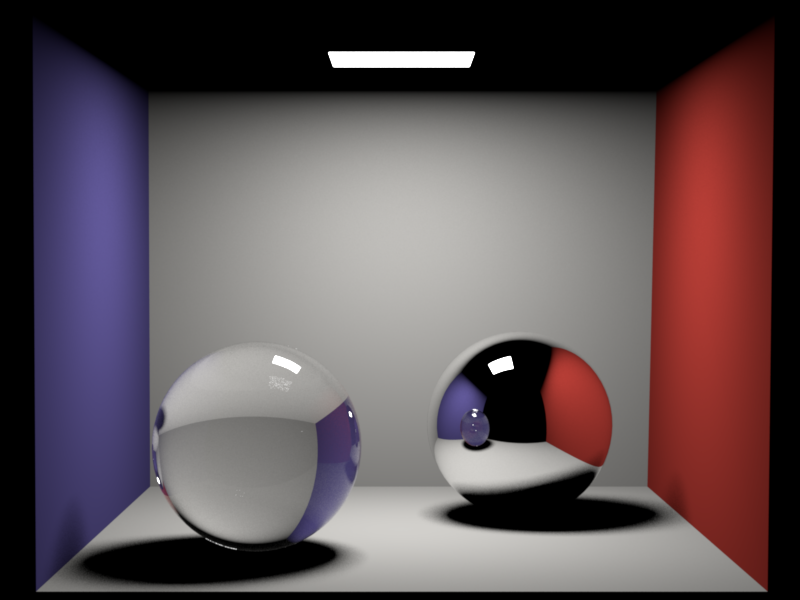
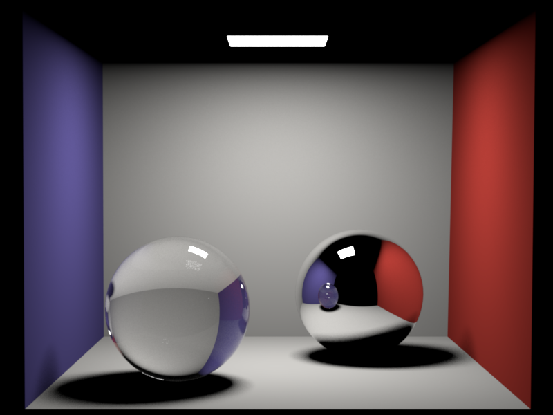

**Homework 4**
Student name: Virginie Piskin
Sciper number: 300542
Area lights (25 pts)
====================
1. Mesh::sample function
The purpose of this function is to randomely sample a point (barycenter) on one
of the triangles of the mesh. This function had to return many variables, I
therefore used a container structure : EmitterSample. This structure wraps :
- The coordinates of the sample point
- The coordinates of the normal associated to this point
- The pdf associated with choosing a point randomely on the mesh
- A boolean which indicates if the normal was computed from the vertexes (as a cross product) or from the normals (barycenter).
In retrospective, maybe I didn't need the boolean indicator and the pdf as it is
a constant value (1/area of the mesh).
2. Emmiter interface
This class is virtual because multiple types of emmitor exist. Therefore,
very similarly to the BSDF interface this class defines 3 virtual functions:
sample(), eval() and pdf().
In order to communicate information about the emmiter, I used another structure
(similarly to the BSDF integrator): EmmiterQueryRecord. This structure wraps:
- The mesh associated to the emmiter
- The light direction from the emitter to the point being rendered
- An EmmiterSample which contains information about the sampling of a point on the emmiter.
I also decided to include the point being rendered (intersection between the ray
coming out of the camera and the scene) as an argument in the function to take
care of cosine computations directly in the emmiter's functions.
3. AreaLight Emmiter
This emmiter gets the radiance property from the xml file (sets the attribute).
It defines the 3 virtual functions from the Emmiter interface:
1. eval: gives back the radiance value
2. pdf: gives back the probability density of sampling a point on the AreaLight
3. sample: samples a point on the AreaLight using the Mesh::sample function,
computes the direction of the light comming from this point by taking in account
the cosine term.
Distribution Ray Tracing (40 pts)
=================================
The whitted integrator has multiple "main" steps:
1. Intersect the scene with a ray to get an intersection point
2. Gets a randomely choosen emmiter from the list of emmiters in the scene
3. Samples a point on the emmiter
4. Checks if the intersected point belongs to an emmiter, in this case we need to evaluate the radiance contribution of the ray directly hitting the emitter.
5. Evaluates the BRDF on the intersected point
6. Checks the visibility between the point and the emmiter
7. Computes the output color
Diffuse logo: Render time = 9.9min - Samples = 4048

Compared to the reference image, the image I rendered looks darker.
Cornell box (distributed): Render time = 1.1min - Samples = 512

The reference image and the image I rendered are pretty similar although we
can see a small up/down shift when switching from one image to the other for
some reason.
Dielectrics (25 pts)
====================
In this part we had to implement the sampling function of the class.
This function can essentially be divided into to cases: there is either reflection
or refraction. For this we use the fresnel() function in common.cpp which returns
the reflected index value fr.
If this value is superior to a uniformely distributed
value (between 0 and 1) we assume there is reflection, otherwise there is refraction.
In both cases we have to compute the output direction, which is either the refracted
direction or the transmitted direction. For this, we used the definition in the
slides (05-Materials.pdf). For this function we also had to check if the light
came from the interior or the exterior by checking the sign of the cosine (incident).
Depending on the behaviors, we had to adapt the computations of the normal and
eta.
To help me get a better understanding of this part I used the PBRD book on
"Reflection Models/Specular Reflection and Transmission")
and this page.
Whitted-style ray tracing (10 pts)
==================================
Here we had to follow the steps indicated in the assignment and addapt the
whitted integrator. If the BSDF of the intersected mesh isn't diffuse, we
use the output direction from the BSDF sampling to create a new ray (either
reflected or refracted) which will bounce on the scene by using a recursive call
to the Li function until it hits a diffuse mesh.
Dielectric logo: Render time = 13.2min - Samples = 4048

Compared to the reference image, the image I rendered looks darker and has more
green tiny points.
Cornell box (Whitted): Render time = 1.3min - Samples = 512

The reference image and the image I rendered are pretty similar although we
can see a small up/down shift when switching from one image to the other for
some reason. Moreover we can see that the little white points on the left ball
are dispached differently.
Feedback
========
We would appreciate any comments or criticism to improve the projects in future years--naturally, this part will not be graded. Examples of information that is useful to us includes:
* How much time did you spend on the assignment? How was it divided between designing, coding, and testing? 4-5 days
* What advice should we have given you before you started?
Check the functions gradually instead of writing all the code and expecting it to work fine.
This is supposed to be the basics of computer science but in practice it is hard
to understand what we need to do (see the big picture) and test accordingly.
Therefore I usually write too much code before testing which is very conter-productive
as I get a lot of execution issues which are usually very hard to debug.
Another thing would also to read the function definitions more carefully and
ask questions about the theory before trying to code anything.
* What was hard or surprising about the assignment?
The hardest part of this exercise was to understand how to implement AreaLight and
Whitted. This is because I didn't quite understand the theory but also I wasn't
very detailed (on purpose I guess).
* What did you like or dislike? What else would you change?
It is very time consuming. I really disliked the fact that the instructions
aren't detailed enough. The concepts are already difficult to understand and there
are so many functions to implement that the lack of details makes it even more difficult.
Also it is hard to try out bits of code as everything is linked, there was a
lot of debugging in this assignment (more than in assignment 3 for instance).
I liked that I got to implement the functions in order to get the images in this
assignment, especially the transparent part of the image.
 
